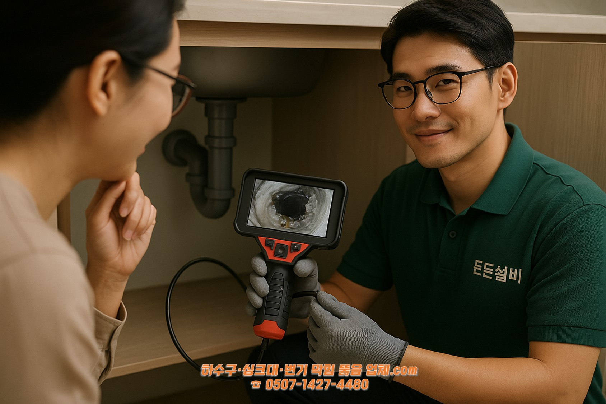
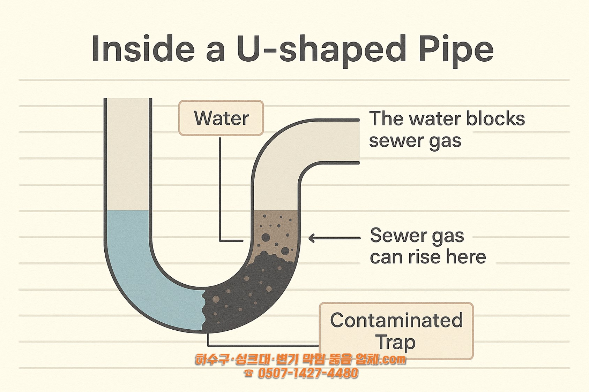
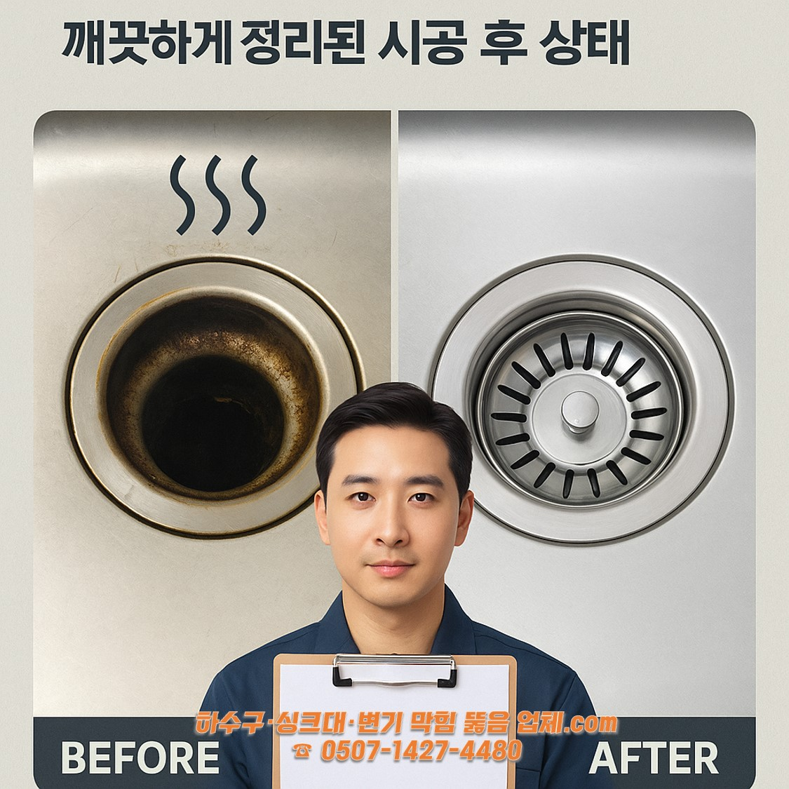
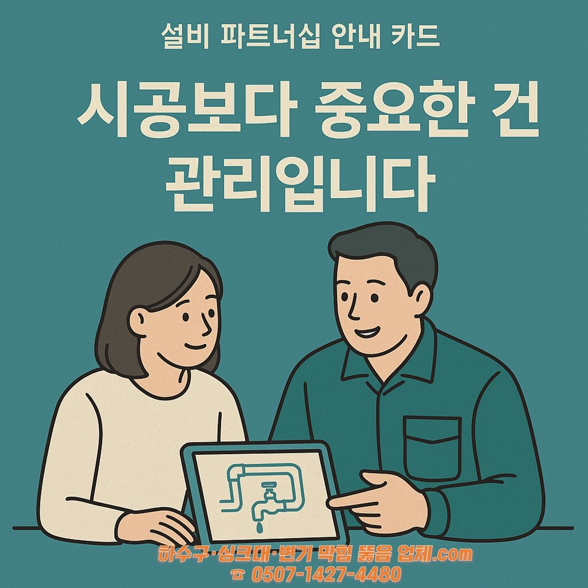

🛠️ [우리집 설비 상식] 싱크대 밑, U자 배관에 숨겨진 비밀
안녕하세요.
당신의 든든한 설비 파트너, 군산 든든설비입니다.
싱크대 아래에서 올라오는 익숙한 냄새, 아무리 뚫어도 반복되는 막힘 문제…
많은 고객님들께서 "왜 또 이런 일이 생기는 걸까요?" 하고 물어보십니다.
오늘은 그 질문에 함께 답을 찾아보기 위해, 우리 집 싱크대 속 U자형 배관의 구조와 원리를 차근차근 살펴보려고 합니다.
❓ 복잡하게 생긴 배관, 왜 U자일까요?
배관이 꼭 U자 형태로 휘어 있는 이유는 악취를 막는 ‘물마개(트랩)’ 구조 때문입니다.
💧 고여 있는 물, 알고 보면 '방패막이'입니다
U자 부분에 항상 일정량의 물이 고여 있는 건, 하수구에서 올라오는 냄새와 가스를 막기 위한 장치입니다.
🧱 그런데, 이곳이 문제의 시작점이 되기도 합니다
기름때, 음식물 찌꺼기 등 무거운 이물질들이 이곳에 쌓이면 ‘오염된 트랩’이 되어 악취가 발생하게 됩니다.
🔍 단순 ‘뚫음’보다 중요한 건 ‘진단’입니다
든든설비는 내시경 진단을 통해 문제의 원인을 고객님과 함께 투명하게 확인하고, 재발 방지까지 함께 설계합니다.
✅ 다시 막히지 않으려면, 관리가 필요합니다
정기 점검과 예방 습관만으로도 쾌적한 주방을 오랫동안 유지하실 수 있습니다.
🧰 든든설비는 이런 파트너입니다
- 문제를 함께 진단하고, 이해할 수 있게 설명합니다.
- 한번의 시공이 아닌, 지속적인 관리 파트너십을 지향합니다.
군산 하수구 · 싱크대 · 변기 · 욕실 설비 진단 & 관리 전문
☎ 0507-1427-4480
#군산하수구냄새 #U자배관원리 #싱크대냄새원인 #하수구관리 #내시경진단 #설비컨설턴트 #든든설비 #하수구예방 #군산설비파트너 #설비관리
홈으로 돌아가기